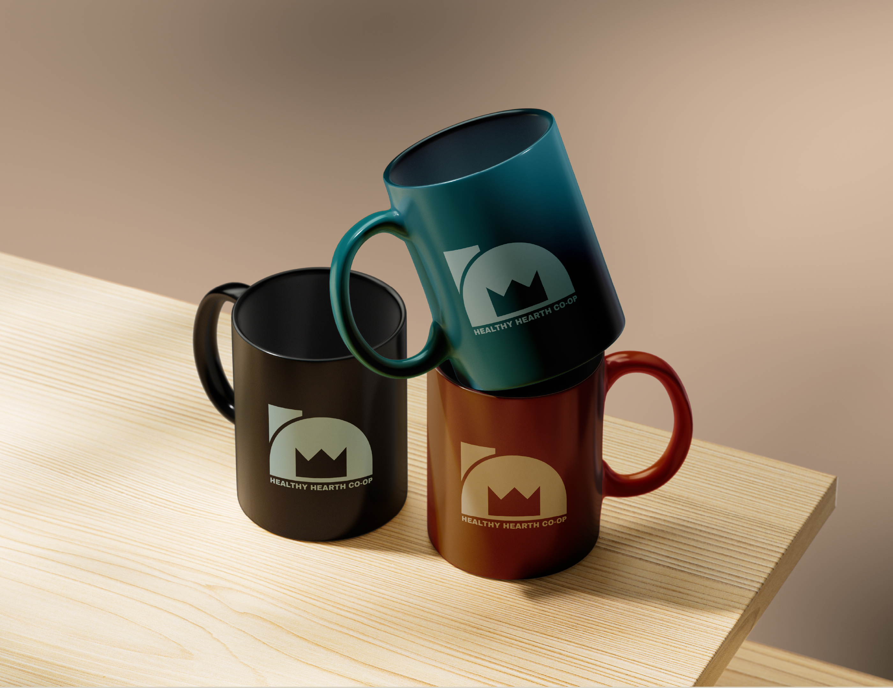
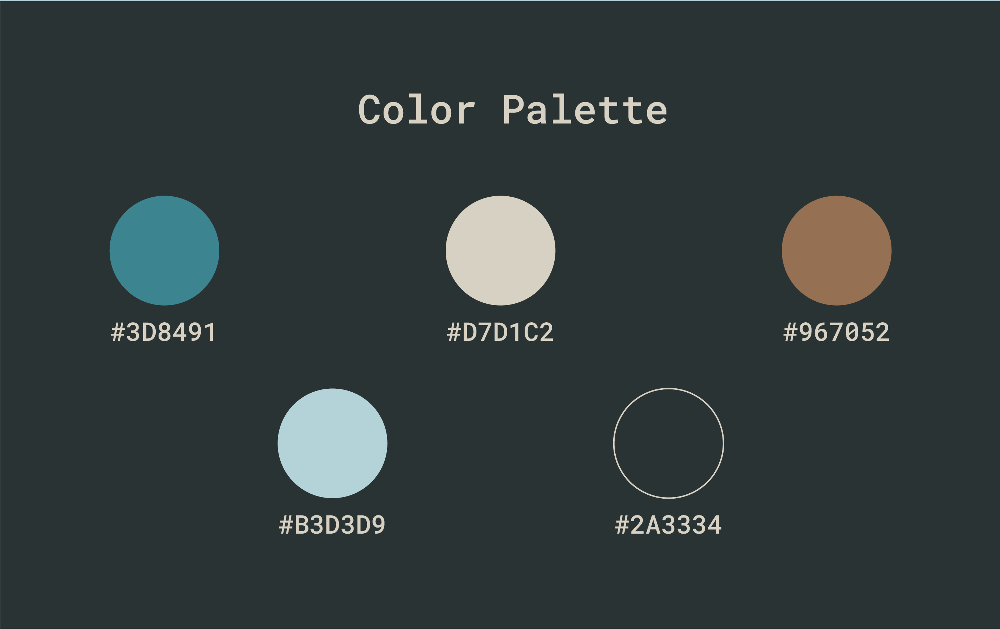
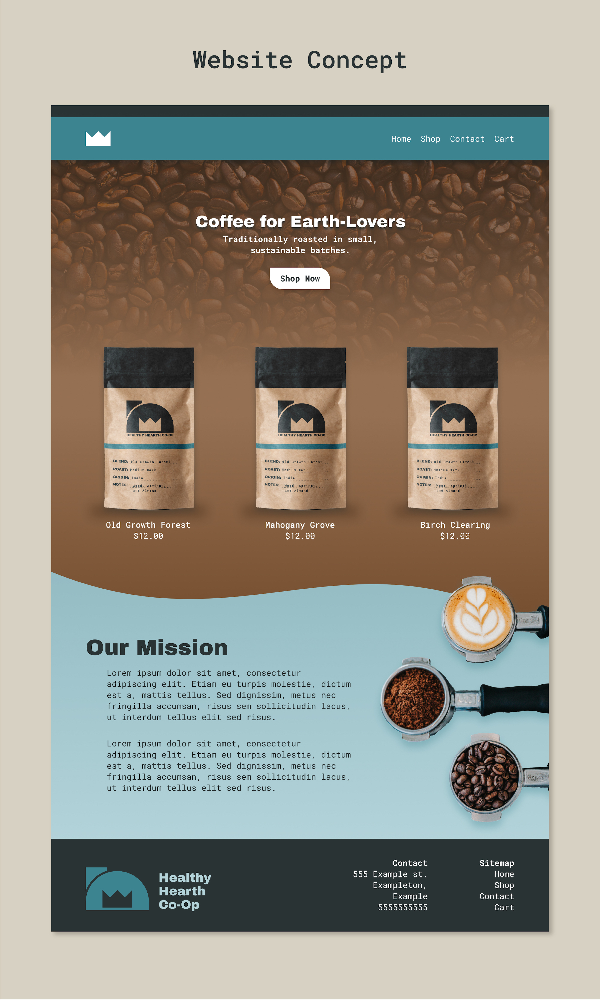

Healthy Hearth
A full branding system for a down-to-earth coffee shop, complete with logos, colors, and a website.
The Logo
The logo represents a home, with a hearth inside of it, as well as the hearth itself with a fire inside. The shape of the fire intentionally resembles a crown, to show the luxury that can be found in simple, rustic food and drink. 
Colors
The colors are representative of the earth, the sky, and the coffee beans used by the cafe. 
The Website
